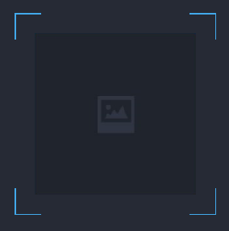
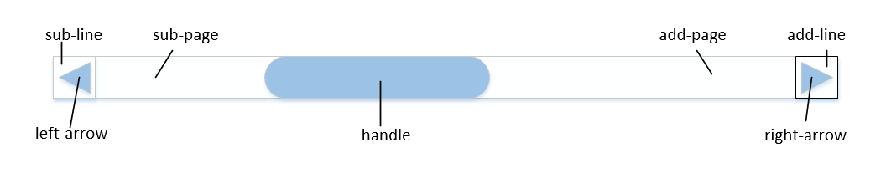

Qt 开发中有两种方法来进行 UI 定制：Qt 二维绘图 (Qt 2D drawing and painting) 以及 Qt 样式表 (Qt Style Sheet)，通常这两种方法需要结合一起使用，以发挥其强大的作用。这里主要针对 Qt 样式表 (Qt Style Sheet)，对使用 Qt 设计界面和控件样式的一些方法进行总结（建议用 QSS 写界面）。
1. Qt 界面样式设计
1.1. 控件样式设计
改变控件的样式一般使用 setStyleSheet(“”) 函数，其可填参数如下：
| 参数 | 效果说明 |
|---|---|
| “background-color: rgb(0, 0, 0);” | 设置 件的背景色为 QColor(0,0,0) |
| “background: url(:/img/label_bg.png);” | 用图片填充控件 |
| “color: rgb(255, 255, 255);” | 设置控件的文本颜色为 QColor(255,255,255) |
| “font: bold 16px;” | 设置控件中的文本字体为 16 号粗体 |
| “border: 2px solid rgb(66, 169, 235);” | 设置控件的边框宽度为 2px，颜色为 QColor(66,169,235) |
| “border-radius: 4px;” | 设置控件的边角为圆角 |
以下仅对具体控件的特殊样式设计进行说明。
1.1.1. QLabel 样式
如果 style sheet 无法满足 QLabel 在应用的需求，可通过继承 QLabel 写自己新的 label 类。比如在 QLabel 的四个角画线，显示一种画框效果，可新建一个 MyQLabel 类，在类中重写 paintEvent(QPaintEvent *event) 函数即可。代码示例如下：
|
|
效果如下（图中的照片是一张背景图）：

1.1.2. QComboBox
参考链接：Qt Style Sheet实践（二）：组合框QComboBox的定制
1.1.3. QEditLine
一般用 QEditLine 控件实现搜索框。
|
|
效果如下：
其他的样式设计可参考：Qt Style Sheet实践（四）：行文本编辑框QLineEdit及自动补全
1.1.4. QCheckbox
| 参数 | 效果说明 |
|---|---|
| “QCheckBox::indicator {width: 20px; height: 20px;}” | 设置勾选框的大小 |
| “QCheckBox::indicator:unchecked {image: url(:/checkbox/unchecked);}” | 设置勾选框未勾选时的效果 |
| “QCheckBox::indicator:unchecked:hover {image: url(:/checkbox/unchecked_hover);}” | 设置勾选框未勾选时鼠标悬浮状态下的效果 |
| “QCheckBox::indicator:unchecked:pressed {image: url(:/checkbox/unchecked_press);}” | 设置勾选框未勾选时鼠标点击状态下的效果 |
| “QCheckBox::indicator:checked {image: url(:/checkbox/checked);}” | 设置勾选框勾选时的效果 |
| “QCheckBox::indicator:checked:hover {image: url(:/checkbox/checked_hover);}” | 设置勾选框勾选时鼠标悬浮状态下的效果 |
| “QCheckBox::indicator:checked:pressed {image: url(:/checkbox/checked_press);}” | 设置勾选框勾选时鼠标点击状态下的效果 |
1.1.5. QPushButton
QPushButton 的独特的样式如下：
| 参数 | 效果说明 |
|---|---|
| “QPushButton{background-color: rgb(66,169,235);}” | 设置正常状态下 QPushButton 的背景色 |
| “QPushButton:hover{background-color: rgb(60,195,245);}” | 设置鼠标悬浮状态下 QPushButton 的背景色 |
| “QPushButton:pressed{background-color: rgb(9,140,188);}” | 设置鼠标点击状态下 QPushButton 的背景色 |
以上设置背景色的方法还可以改为设置图片，方法为：将 “background-color: rgb(66,169,235)” 改为 “border-image: url(:/pushbutton_normal.png)”
1.1.6. QScrollBar
设置水平滚动条：
|
|
设置垂直滚动条：
|
|
QScrollBar 的一些样式属性说明：

1.1.7. QTableWidget
设置表格样式：
|
|